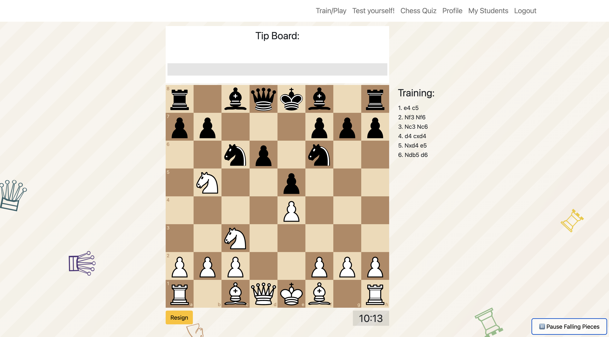
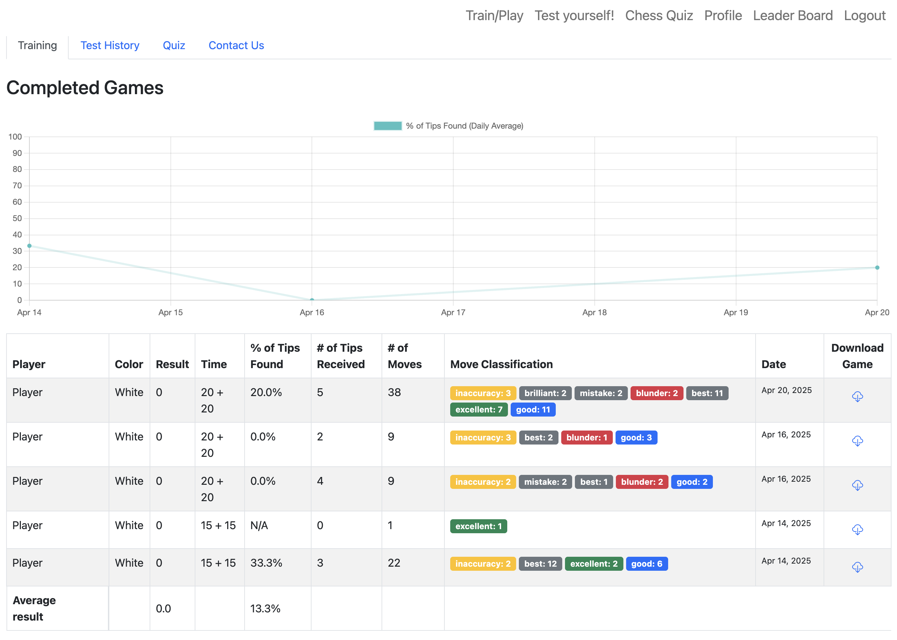
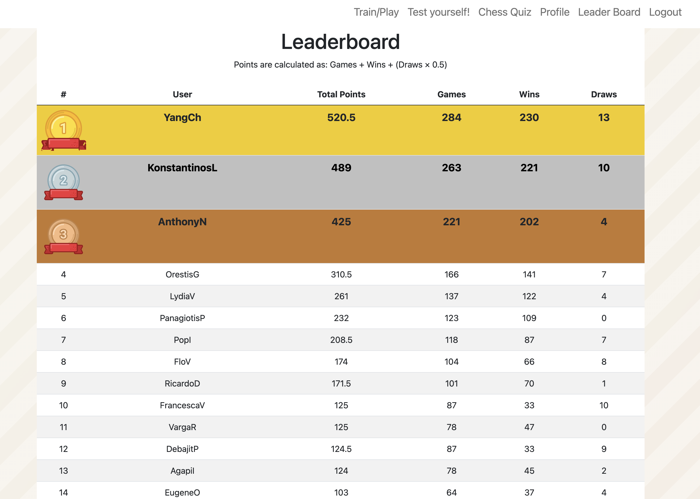
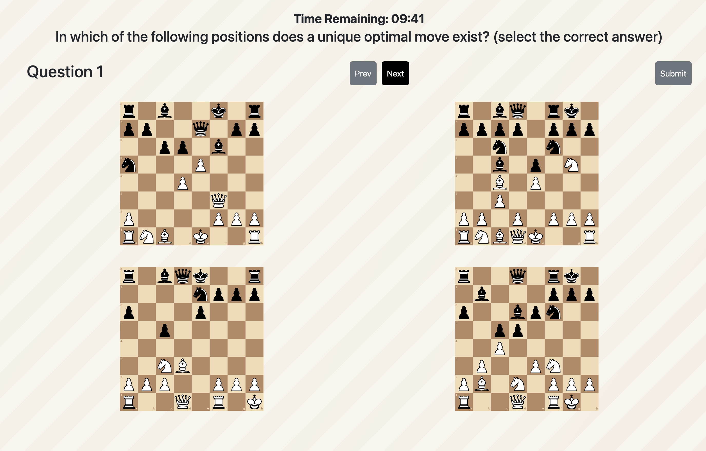
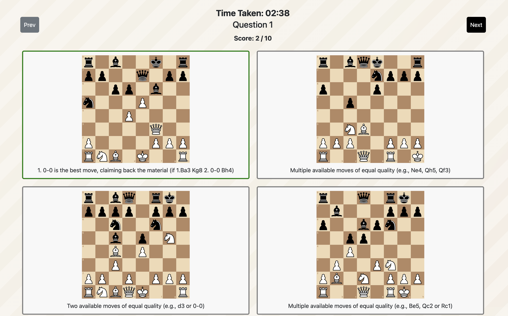
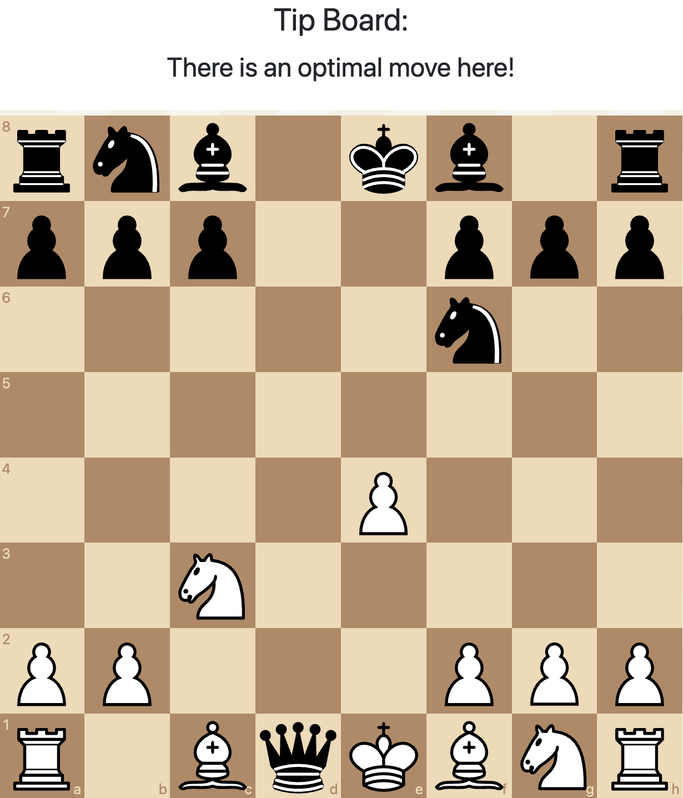
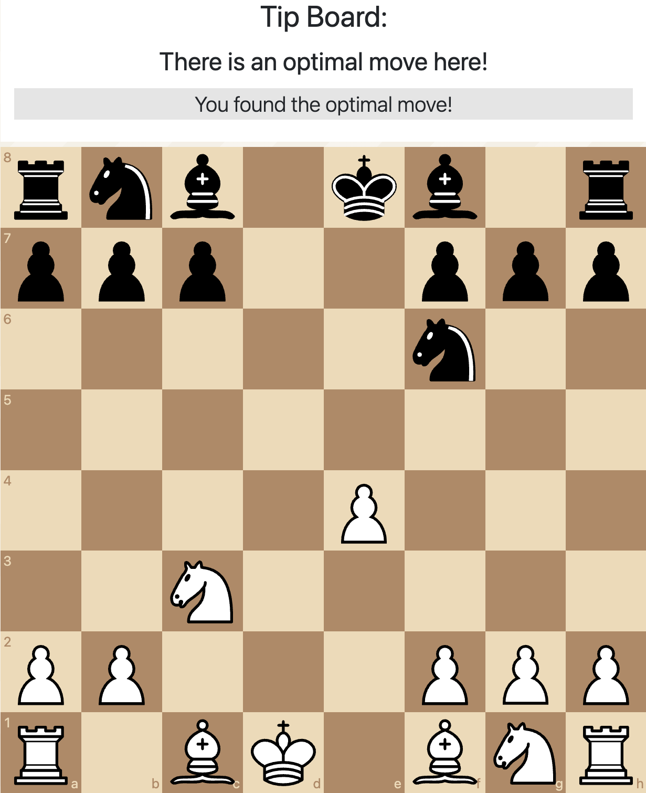
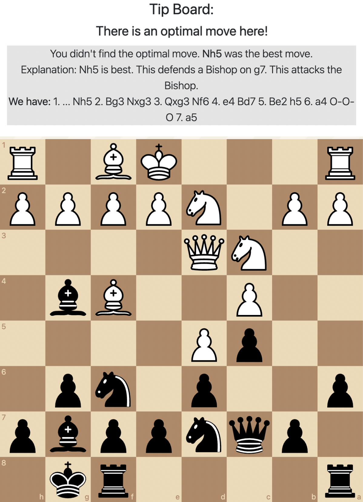
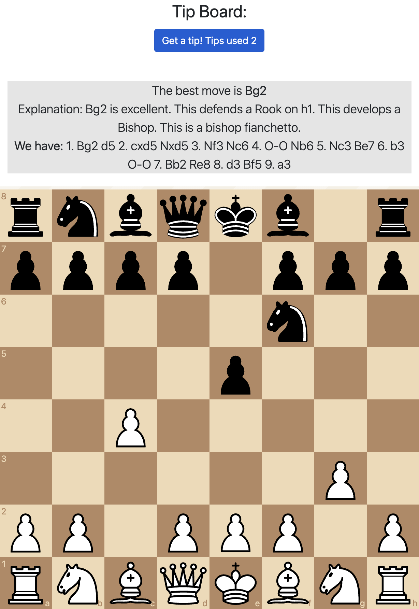
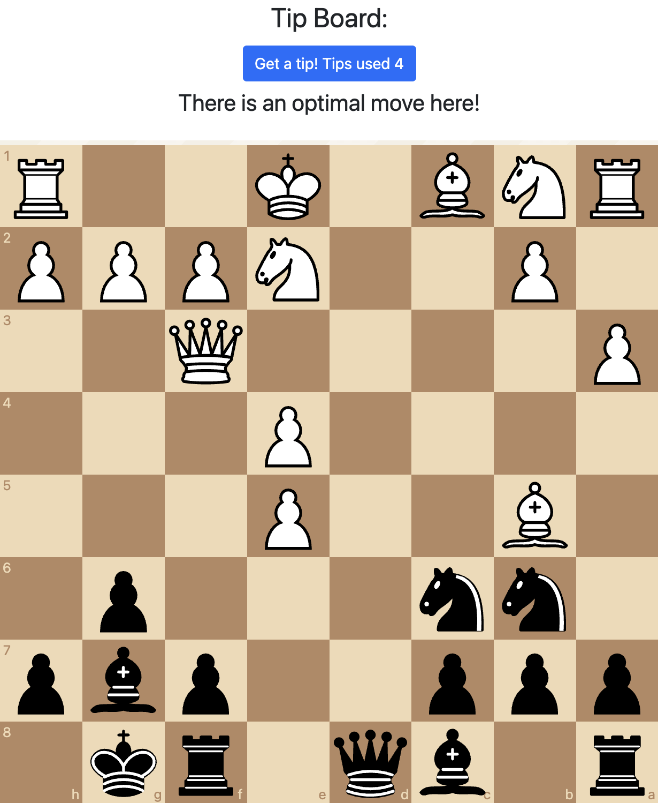

System-regulated
(alert tips only)
No agency over AI assistance provision
Research platform overview
A custom chess-training platform used to study when AI assistance supports learning and when on-demand help weakens the effort that builds skill.
The field experiment
The platform was built for a 12-week field experiment with more than 200 chess-club students. Participants trained on the same custom app, which combined adaptive engine games, AI-generated tips, chess quizzes, test games, and progress dashboards.
The central experimental question was simple but consequential: what happens when learners can request solution-revealing AI help on demand, in addition to the same automated alert tips everyone receives? The answer matters because assistance that improves immediate performance can also replace the productive struggle needed for long-term learning.
The platform
The live research app required authenticated student and coach accounts. This public version preserves the platform context, intervention logic, and paper screenshots so the study can be shared without exposing the original backend or participant data.

Train / play
Students played against a chess engine calibrated to their level. The app identified critical positions where an optimal move existed, delivered automated alert tips in both conditions, and tracked whether students in the self-regulated condition requested additional move-reveal help.
Study interfaces
Beyond training games, the platform gave students a profile page, leaderboard, chess quizzes, and post-quiz feedback. These paper figures show how learning activity, rankings, and knowledge checks were presented during the field deployment.




Experimental conditions
Alongside their regular coach-led training, students were randomly assigned to two conditions that used the same platform, the same engine calibration, the same incentives, and the same automated alert tips. Both conditions received alerts and post-move feedback at algorithmically identified positions. The self-regulated condition added one option: a button that could reveal the best move on demand.
(alert tips only)
No agency over AI assistance provision
(alert tips + button to get on-demand move-reveal tips)
Agency over AI assistance provision (when and how often to click the button)
Alert tips and feedback
These automated alert tips were present in both experimental conditions. They signaled that the position contained an important opportunity. After the student moved, feedback either confirmed that the optimal move was found or revealed the missed optimal move with an explanation.



Move-reveal tips
This was the only intervention difference. Self-regulated students kept the same automated alert tips and feedback, but also had a button that could reveal the best move on demand. This added control made assistance easier to access, but also made it easier to skip productive search.


Key findings
Both groups improved, but students with on-demand access to AI help learned less than half as much as students whose assistance was system-regulated.
Students whose help was governed by the platform made substantially larger gains after the 12-week training period.
Students who could request extra AI help whenever they wanted improved by less than half as much, despite having more access to assistance.
The learning loss was concentrated when students requested help on tasks inside their Zone of Proximal Development: difficult enough to require effort, but still achievable with the right support.
Students with on-demand help completed fewer training games, reported lower accomplishment, and increased their AI requests over time even while recognizing the risk of over-reliance.